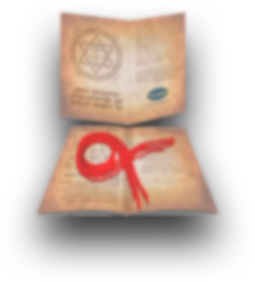
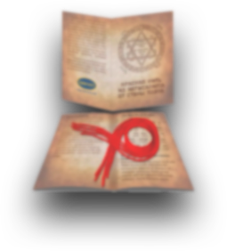
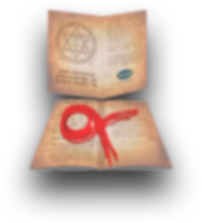
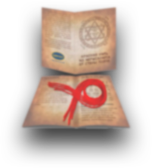
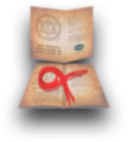
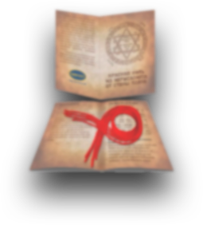
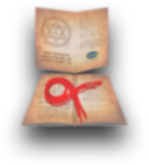
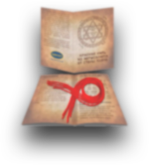

«Чудеса там, где в них верят, и чем больше верят, тем чаще они случаются» (Д.Дидро)
Размер: 30 см. Вес: 5 гр. Материал: Шерсть. В комлекте: Молитва и правила использования. Страна-производитель: Израиль. Цена: 1 шт = 290 руб.
 







Красная нить из Иерусалима от Стены Плача
Размер: 30 см. Вес: 5 гр. Материал: Шерсть. В комлекте: Молитва и правила использования. Страна-производитель: Израиль. Цена: 1 шт = 290 руб.